Although the customary line drawings of simple cycloalkanes are geometrical polygons, the actual shape of these compounds in most cases is very different.
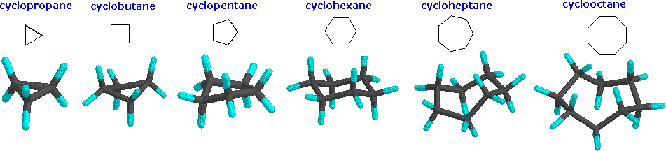
Cyclopropane is necessarily planar (flat), with the carbon atoms at the corners of an equilateral triangle. The 60º bond angles are much smaller than the optimum 109.5º angles of a normal tetrahedral carbon atom, and the resulting angle strain dramatically influences the chemical behavior of this cycloalkane. Cyclopropane also suffers substantial eclipsing strain, since all the carbon-carbon bonds are fully eclipsed. Cyclobutane reduces some bond-eclipsing strain by folding (the out-of-plane dihedral angle is about 25º), but the total eclipsing and angle strain remains high. Cyclopentane has very little angle strain (the angles of a pentagon are 108º), but its eclipsing strain would be large (about 10 kcal/mol) if it remained planar. Consequently, the five-membered ring adopts non-planar puckered conformations whenever possible. Rings larger than cyclopentane would have angle strain if they were planar. However, this strain, together with the eclipsing strain inherent in a planar structure, can be relieved by puckering the ring. Cyclohexane is a good example of a carbocyclic system that virtually eliminates eclipsing and angle strain by adopting non-planar conformations, such as those shown below. Cycloheptane and cyclooctane have greater strain than cyclohexane, in large part due to transannular crowding (steric hindrance by groups on opposite sides of the ring).
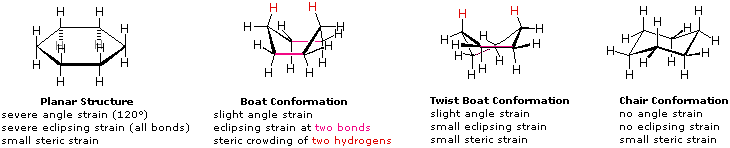
A planar structure for cyclohexane is clearly improbable. The bond angles would necessarily be 120º, 10.5º larger than the ideal tetrahedral angle. Also, every carbon-carbon bond in such a structure would be eclipsed. The resulting angle and eclipsing strains would severely destabilize this structure. If two carbon atoms on opposite sides of the six-membered ring are lifted out of the plane of the ring, much of the angle strain can be eliminated. This boat structure still has two eclipsed bonds (colored magenta in the drawing) and severe steric crowding of two hydrogen atoms on the "bow" and "stern" of the boat. This steric crowding is often called steric hindrance. By twisting the boat conformation, the steric hindrance can be partially relieved, but the twist-boat conformer still retains some of the strains that characterize the boat conformer. Finally, by lifting one carbon above the ring plane and the other below the plane, a relatively strain-free chair conformer is formed. This is the predominant structure adopted by molecules of cyclohexane. An energy diagram for these conformational interconversions is drawn below. The activation energy for the chair-chair conversion is due chiefly to a high energy twist-chair form (TC), in which significant angle and eclipsing strain are present. A facile twist-boat (TB)-boat (B) equilibrium intervenes as one chair conformer (C) changes to the other.
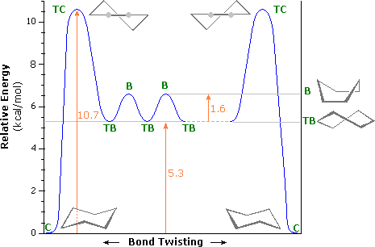
These conformations may be examined as interactive models by .
Investigations concerning the conformations of cyclohexane were initiated by H. Sachse (1890) and E. Mohr (1918), but it was not until 1950 that a full treatment of the manifold consequences of interconverting chair conformers and the different orientations of pendent bonds was elucidated by D. H. R. Barton (Nobel Prize 1969 together with O. Hassel). The following discussion presents some of the essential features of this conformational analysis. On careful examination of a chair conformation of cyclohexane, we find that the twelve hydrogens are not structurally equivalent. Six of them are located about the periphery of the carbon ring, and are termed equatorial. The other six are oriented above and below the approximate plane of the ring (three in each location), and are termed axial because they are aligned parallel to the symmetry axis of the ring. In the stick model shown on the left below, the equatorial hydrogens are colored blue, and the axial hydrogens are red. Since there are two equivalent chair conformations of cyclohexane in rapid equilibrium, all twelve hydrogens have 50% equatorial and 50% axial character.
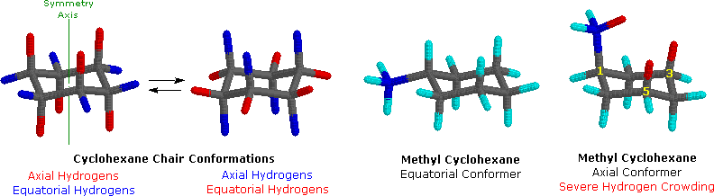
Because axial bonds are parallel to each other, substituents larger than hydrogen generally suffer greater steric crowding when they are oriented axial rather than equatorial. Consequently, substituted cyclohexanes will preferentially adopt conformations in which large substituents assume equatorial orientation. In the two methylcyclohexane conformers shown above, the methyl carbon is colored blue. When the methyl group occupies an axial position it suffers steric crowding by the two axial hydrogens located on the same side of the ring. This crowding or steric hindrance is associated with the red-colored hydrogens in the structure. A careful examination of the axial conformer shows that this steric hindrance is due to two gauche-like orientations of the methyl group with ring carbons #3 and #5. The use of models is particularly helpful in recognizing and evaluating these relationships.
These conformations may be examined as interactive models by
To view an animation of the interconversion of cyclohexane chair conformers
The relative steric hindrance experienced by different substituent groups oriented in an axial versus equatorial location on cyclohexane may be determined by the conformational equilibrium of the compound. The corresponding equilibrium constant is related to the energy difference between the conformers, and collecting such data allows us to evaluate the relative tendency of substituents to exist in an equatorial or axial location. A table of these free energy values (sometimes referred to as A values) may be examined by . Clearly the apparent "size" of a substituent is influenced by its width and bond length to cyclohexane, as evidenced by the fact that an axial vinyl group is less hindered than ethyl, and iodine slightly less than chlorine.
Because it is so common among natural and synthetic compounds, and because its conformational features are rather well understood, we shall focus on the six-membered cyclohexane ring in this discussion. In a sample of cyclohexane, the two identical chair conformers are present in equal concentration, and the hydrogens are all equivalent (50% equatorial & 50% axial) due to rapid interconversion of the conformers. When the cyclohexane ring bears a substituent, the two chair conformers are not the same. In one conformer the substituent is axial, in the other it is equatorial. Due to steric hindrance in the axial location, substituent groups prefer to be equatorial and that chair conformer predominates in the equilibrium. We noted earlier that cycloalkanes having two or more substituents on different ring carbon atoms exist as a pair (sometimes more) of configurational stereoisomers. Now we must examine the way in which favorable ring conformations influence the properties of the configurational isomers. Remember, configurational stereoisomers are stable and do not easily interconvert, whereas, conformational isomers normally interconvert rapidly. In examining possible structures for substituted cyclohexanes, it is useful to follow two principles.
(i) Chair conformations are generally more stable than other possibilities. (ii) Substituents on chair conformers prefer to occupy equatorial positions due to the increased steric hindrance of axial locations.
The following equations and formulas illustrate how the presence of two or more substituents on a cyclohexane ring perturbs the interconversion of the two chair conformers in ways that can be predicted.
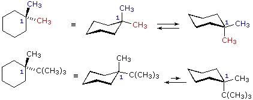
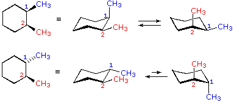
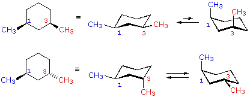
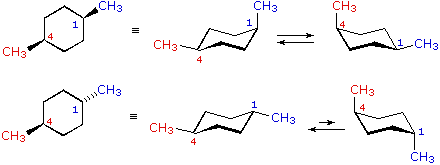
In the case of 1,1-disubstituted cyclohexanes, one of the substituents must necessarily be axial and the other equatorial, regardless of which chair conformer is considered. Since the substituents are the same in 1,1-dimethylcyclohexane, the two conformers are identical and present in equal concentration. In 1-t-butyl-1-methylcyclohexane the t-butyl group is much larger than the methyl, and that chair conformer in which the larger group is equatorial will be favored in the equilibrium( > 99%). Consequently, the methyl group in this compound is almost exclusively axial in its orientation. In the cases of 1,2-, 1,3- and 1,4-disubstituted compounds the analysis is a bit more complex. It is always possible to have both groups equatorial, but whether this requires a cis-relationship or a trans-relationship depends on the relative location of the substituents. As we count around the ring from carbon #1 to #6, the uppermost bond on each carbon changes its orientation from equatorial (or axial) to axial (or equatorial) and back. It is important to remember that the bonds on a given side of a chair ring-conformation always alternate in this fashion. Therefore, it should be clear that for cis-1,2-disubstitution, one of the substituents must be equatorial and the other axial; in the trans-isomer both may be equatorial. Because of the alternating nature of equatorial and axial bonds, the opposite relationship is true for 1,3-disubstitution (cis is all equatorial, trans is equatorial/axial). Finally, 1,4-disubstitution reverts to the 1,2-pattern.
The conformations of some substituted cyclohexanes may be examined as interactive models by .
For additional information about six-membered ring conformations Click Here.
These four problems concern the recognition of different conformations of a given constitutional structure. Axial and equatorial relationships of cyclohexane substituents are also examined.
This page is the property of The Edvibe Team. Comments, questions and errors should be sent to contact@edvibe.co.ke. These pages are provided to the IOCD to assist in capacity building in chemical education. 05/05/2013
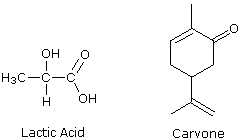
All objects may be classified with respect to a property we call chirality (from the Greek cheir meaning hand). A chiral object is not identical in all respects (i.e. superimposable) with its mirror image. An achiral object is identical with (superimposable on) its mirror image. Chiral objects have a "handedness", for example, golf clubs, scissors, shoes and a corkscrew. Thus, one can buy right or left-handed golf clubs and scissors. Likewise, gloves and shoes come in pairs, a right and a left. Achiral objects do not have a handedness, for example, a baseball bat (no writing or logos on it), a plain round ball, a pencil, a T-shirt and a nail. The chirality of an object is related to its symmetry, and to this end it is useful to recognize certain symmetry elements that may be associated with a given object. A symmetry element is a plane, a line or a point in or through an object, about which a rotation or reflection leaves the object in an orientation indistinguishable from the original. Some examples of symmetry elements are shown below.
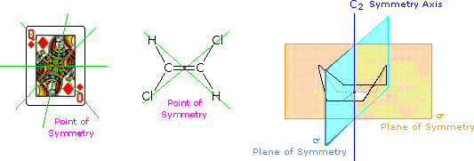
The face playing card provides an example of a center or point of symmetry. Starting from such a point, a line drawn in any direction encounters the same structural features as the opposite (180º) line. Four random lines of this kind are shown in green. An example of a molecular configuration having a point of symmetry is (E)-1,2-dichloroethene. Another way of describing a point of symmetry is to note that any point in the object is reproduced by reflection through the center onto the other side. In these two cases the point of symmetry is colored magenta. The boat conformation of cyclohexane shows an axis of symmetry (labeled C2 here) and two intersecting planes of symmetry (labeled σ). The notation for a symmetry axis is Cn, where n is an integer chosen so that rotation about the axis by 360/nº returns the object to a position indistinguishable from where it started. In this case the rotation is by 180º, so n=2. A plane of symmetry divides the object in such a way that the points on one side of the plane are equivalent to the points on the other side by reflection through the plane. In addition to the point of symmetry noted earlier, (E)-1,2-dichloroethene also has a plane of symmetry (the plane defined by the six atoms), and a C2 axis, passing through the center perpendicular to the plane. The existence of a reflective symmetry element (a point or plane of symmetry) is sufficient to assure that the object having that element is achiral. Chiral objects, therefore, do not have any reflective symmetry elements, but may have rotational symmetry axes, since these elements do not require reflection to operate. In addition to the chiral vs achiral distinction, there are two other terms often used to refer to the symmetry of an object. These are:
(i) Dissymmetry: The absence of reflective symmetry elements. All dissymmetric objects are chiral. (ii) Asymmetry: The absence of all symmetry elements. All asymmetric objects are chiral.
Models of some additional three-dimensional examples are provided on the interactive symmetry page.
The symmetry elements of a structure provide insight concerning the structural equivalence or nonequivalence of similar component atoms or groups Examples of this symmetry analysis may be viewed by Clicking Here.
George Hart has produced a nice treatment of symmetry in polyhedra that makes use of VRML. To view this site Click Here
A consideration of the chirality of molecular configurations explains the curious stereoisomerism observed for lactic acid, carvone and a multitude of other organic compounds. Tetravalent carbons have a tetrahedral configuration. If all four substituent groups are the same, as in methane or tetrachloromethane, the configuration is that of a highly symmetric "regular tetrahedron". A regular tetrahedron has six planes of symmetry and seven symmetry axes (four C3 & three C2) and is, of course, achiral. Examples of these Axes and Planes are found on George Hart's VRML site. If one of the carbon substituents is different from the other three, the degree of symmetry is lowered to a C3 axis and three planes of symmetry, but the configuration remains achiral. The tetrahedral configuration in such compounds is no longer regular, since bond lengths and bond angles change as the bonded atoms or groups change. Further substitution may reduce the symmetry even more, but as long as two of the four substituents are the same there is always a plane of symmetry that bisects the angle linking those substituents, so these configurations are also achiral.
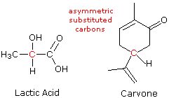
The identity or non-identity of mirror-image configurations of some substituted carbons may be examined as interactive models by .
A useful first step in examining structural formulas to determine whether stereoisomers may exist is to identify all stereogenic elements. A stereogenic element is a center, axis or plane that is a focus of stereoisomerism, such that an interchange of two groups attached to this feature leads to a stereoisomer. Stereogenic elements may be chiral or achiral. An asymmetric carbon is often a chiral stereogenic center, since interchanging any two substituent groups converts one enantiomer to the other. However, care must be taken when evaluating bridged structures in which bridgehead carbons are asymmetric. This caveat will be illustrated by Clicking Here. Alkenes having two different groups on each double bond carbon (e.g. abC=Cab) constitute an achiral stereogenic element, since interchanging substituents at one of the carbons changes the cis/trans configuration of the double bond. Chiral stereogenic axes or planes may be present in a molecular configuration, as in the case of allenes, but these are less common than chiral centers and will not be discussed here.
Structural formulas for eight organic compounds are displayed in the frame below. Some of these structures are chiral and some are achiral. First, try to identify all chiral stereogenic centers. Formulas having no chiral centers are necessarily achiral. Formulas having one chiral center are always chiral; and if two or more chiral centers are present in a given structure it is likely to be chiral, but in special cases, to be discussed later, may be achiral. Once you have made your selections of chiral centers, check them by pressing the "Show Stereogenic Centers" button. The chiral centers will be identified by red dots.
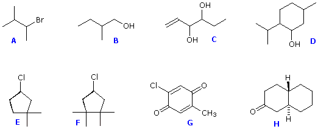
Structures F and G are achiral. The former has a plane of symmetry passing through the chlorine atom and bisecting the opposite carbon-carbon bond. The similar structure of compound E does not have such a symmetry plane, and the carbon bonded to the chlorine is a chiral center (the two ring segments connecting this carbon are not identical). Structure G is essentially flat. All the carbons except that of the methyl group are sp2 hybridized, and therefore trigonal-planar in configuration. Compounds C, D & H have more than one chiral center, and are also chiral. Remember, all chiral structures may exist as a pair of enantiomers. Other configurational stereoisomers are possible if more than one stereogenic center is present in a structure.
Identifying and distinguishing enantiomers is inherently difficult, since their physical and chemical properties are largely identical. Fortunately, a nearly two hundred year old discovery by the French physicist Jean-Baptiste Biot has made this task much easier. This discovery disclosed that the right- and left-handed enantiomers of a chiral compound perturb plane-polarized light in opposite ways. This perturbation is unique to chiral molecules, and has been termed optical activity.
Plane-polarized light is created by passing ordinary light through a polarizing device, which may be as simple as a lens taken from polarizing sun-glasses. Such devices transmit selectively only that component of a light beam having electrical and magnetic field vectors oscillating in a single plane. The plane of polarization can be determined by an instrument called a polarimeter, shown in the diagram below.
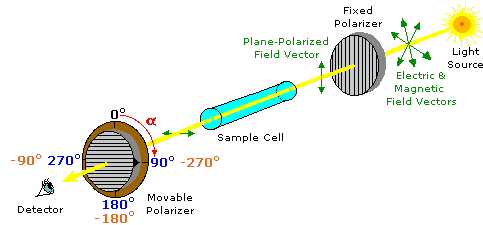
Monochromatic (single wavelength) light, is polarized by a fixed polarizer next to the light source. A sample cell holder is located in line with the light beam, followed by a movable polarizer (the analyzer) and an eyepiece through which the light intensity can be observed. In modern instruments an electronic light detector takes the place of the human eye. In the absence of a sample, the light intensity at the detector is at a maximum when the second (movable) polarizer is set parallel to the first polarizer (α = 0º). If the analyzer is turned 90º to the plane of initial polarization, all the light will be blocked from reaching the detector.
András Szilágyi has created a nice animation, illustrating various kinds of polarized light. This site may be examined by Clicking Here .
Chemists use polarimeters to investigate the influence of compounds (in the sample cell) on plane polarized light. Samples composed only of achiral molecules (e.g. water or hexane), have no effect on the polarized light beam. However, if a single enantiomer is examined (all sample molecules being right-handed, or all being left-handed), the plane of polarization is rotated in either a clockwise (positive) or counter-clockwise (negative) direction, and the analyzer must be turned an appropriate matching angle, α, if full light intensity is to reach the detector. In the above illustration, the sample has rotated the polarization plane clockwise by +90º, and the analyzer has been turned this amount to permit maximum light transmission. The observed rotations (α) of enantiomers are opposite in direction. One enantiomer will rotate polarized light in a clockwise direction, termed dextrorotatory or (+), and its mirror-image partner in a counter-clockwise manner, termed levorotatory or (–). The prefixes dextro and levo come from the Latin dexter, meaning right, and laevus, for left, and are abbreviated d and l respectively. If equal quantities of each enantiomer are examined , using the same sample cell, then the magnitude of the rotations will be the same, with one being positive and the other negative. To be absolutely certain whether an observed rotation is positive or negative it is often necessary to make a second measurement using a different amount or concentration of the sample. In the above illustration, for example, α might be –90º or +270º rather than +90º. If the sample concentration is reduced by 10%, then the positive rotation would change to +81º (or +243º) while the negative rotation would change to –81º, and the correct α would be identified unambiguously. Since it is not always possible to obtain or use samples of exactly the same size, the observed rotation is usually corrected to compensate for variations in sample quantity and cell length. Thus it is common practice to convert the observed rotation, α, to a specific rotation, [α], by the following formula:
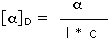
Compounds that rotate the plane of polarized light are termed optically active. Each enantiomer of a stereoisomeric pair is optically active and has an equal but opposite-in-sign specific rotation. Specific rotations are useful in that they are experimentally determined constants that characterize and identify pure enantiomers. For example, the lactic acid and carvone enantiomers discussed earlier have the following specific rotations.
A 50:50 mixture of enantiomers has no observable optical activity. Such mixtures are called racemates or racemic modifications, and are designated (±). When chiral compounds are created from achiral compounds, the products are racemic unless a single enantiomer of a chiral co-reactant or catalyst is involved in the reaction. The addition of HBr to either cis- or trans-2-butene is an example of racemic product formation (the chiral center is colored red in the following equation).
Chiral organic compounds isolated from living organisms are usually optically active, indicating that one of the enantiomers predominates (often it is the only isomer present). This is a result of the action of chiral catalysts we call enzymes, and reflects the inherently chiral nature of life itself. Chiral synthetic compounds, on the other hand, are commonly racemates, unless they have been prepared from enantiomerically pure starting materials.
There are two ways in which the condition of a chiral substance may be changed: 1. A racemate may be separated into its component enantiomers. This process is called resolution. 2. A pure enantiomer may be transformed into its racemate. This process is called racemization.